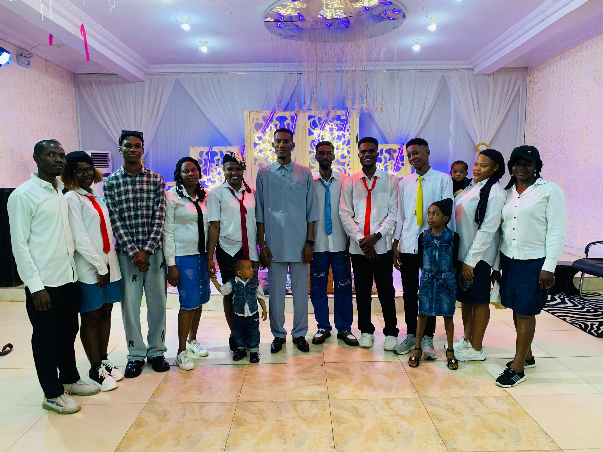
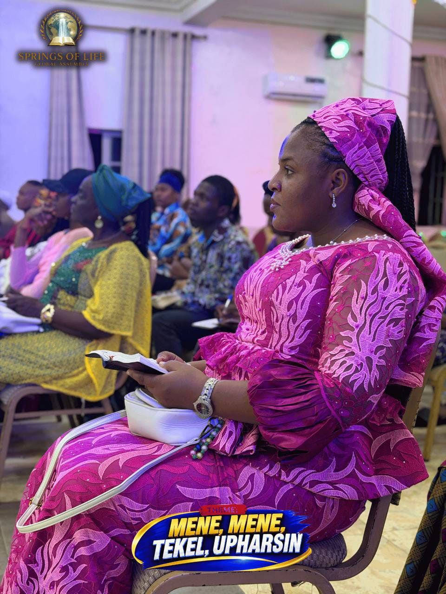

✝️
Worship & Prayer
We gather to encounter God through praise, prayer, and the preaching of His Word.
Spring of Life Global Assembly
“And ye shall know the truth, and the truth shall make you free.” — John 8:32
We are devoted to the truth of God’s Word, the power of prayer, and the life-changing presence of Jesus Christ. Join us as we worship, grow, and serve together.
Sunday Service

Welcome
A place where lives are transformed, destinies are awakened, and the truth of God’s Word brings freedom. At SOLGA, we believe in the power of God’s Word to renew minds, restore hope, and revive the soul.
We warmly invite you, your family, and your community to join us as we grow in faith, discover God’s truth, and experience His transforming power.
Our Mission
We gather to encounter God through praise, prayer, and the preaching of His Word.
We disciple believers to grow in wisdom, character, and a deeper relationship with Jesus.
Through compassion, service, and mission, we reach people with the love of Christ.
Latest Message
Experience the power of God’s presence in inspiring worship, dynamic preaching, and a faith-filled gathering that encourages the heart.
Upcoming Events
Join us for an evening of worship, intercession, and spiritual renewal.
Encouraging young people to grow in faith, purpose, and community.
Serving our neighbors with love, compassion, and practical support.
Support the Mission
Through your giving, we are able to support ministry work, outreach programs, discipleship, and community transformation. Every seed sown contributes to the advancement of God’s Kingdom.
Give Today